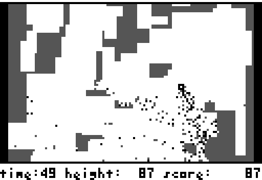

Spout is a simple caveflying game. The aim is to get as high as possible avoiding or destroying obstacles.

Spout was originally written for a handheld by kuni, and soon afterwards was ported to Windows using cygwin and sdl and released under the MIT license.
In 2004 a 'unix version' was released, which mostly just slapped autotools into the windows version and infringed the license.
This is a new unix version, based on the original Windows code by kuni, which aims to add useful features and simplify the code.